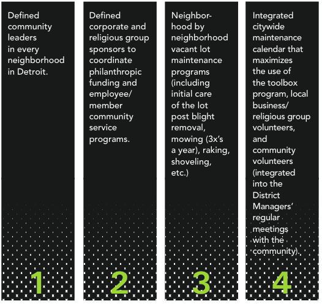

The massive scale of blight in Detroit and urgency to address it requires that the city carry out the best practices possible to remove blight safely and efficiently. Although the Task Force recognized a wide array of possible interventions, we focused on the sensitive and complex area of deconstruction and demolition. We studied the experiences of other cities that tackled large-scale blight, such as Baltimore, New Orleans, and Cleveland, and collected the best information available to prepare our recommendations.
This chapter includes information and recommendations on the following:
Our recommendations put people first by addressing resident and worker safety, recognizing the need to provide economic opportunities, and creating a path to healthier neighborhood environments.
The Task Force grouped the 78,506 blighted structures into the following categories:
Because certain types of structures have similar characteristics for removal, we have grouped these five categories into two:
Because neighborhood structures make up 98 percent of the total number of blighted structures in Detroit, the Task Force spent most of its time examining this category. Four major areas of activity were considered:
The Detroit Land Bank Authority should take the lead on these activities.
Environmental work is broken into two phases: survey and abatement. The environmental survey is completed during the Strategic Assessment Triage Tool (SATT) process (discussed in Chapter 5). In known high risk areas, the results of the survey provide information about the levels of asbestos and lead in a structure. Combined with the requirements of environmental ordinances, these levels define the appropriate abatement measures for each structure.
The Task Force gathered information and best practices for asbestos abatement from several sources, including the Springwells Village pilot deconstruction project in Detroit, and several municipalities, including New Orleans, Baltimore, and Cleveland. The Task Force also gathered information from the U.S. Environmental Protection Agency and examined past Detroit demolition activities. Asbestos regulatory and clearance practices are well documented and well enforced in many cities across the country, including Detroit. Because of that, the protocol is similar in many markets. The nuances largely exist around the varying abatement, hauling, and dumping across regions.
In every case, an environmental survey is conducted inside the structure to gather and analyze materials. If contaminants are found, an abatement plan is sent to the Michigan Department of Environmental Quality’s Air Quality
Division to determine its compliance with the National Emission Standards for Hazardous Air Pollutants (NESHAP). No demolition or renovation work can occur on that structure for 10 working days while the State evaluates the plan. When the plan receives the green light for compliance, demolition can proceed. During demolition, debris must be hauled to a designated section of the landfill for disposal.
The Task Force supports the current regulatory process for asbestos abatement. Our strongest recommendation in this area is to complete the environmental survey, utilizing the SATT, as soon as possible once the Detroit Land Bank Authority has gained legal authority to enter the premises.
The Motor City Mapping tool indicates which properties might contain blighted structures, but MCM cannot help pinpoint where the greatest deposits of lead exist.
The presence, density, and type of contaminants vary widely in Detroit, and even from one address to the next on the same street. The types and ages of building systems and surfaces offer some ability to predict which buildings tend to contain lead. For example, glossy paints manufactured throughout the 20th century until 1978 typically contain lead. There are no reliable ways, however, to predict the highest concentrations of lead with great accuracy.
While asbestos abatement practices are fairly well known, studied, and documented, the same does not hold true for lead. Lead exposure and abatement is still mostly uncharted territory. The current code calls for a “wet” demolition to address dust mitigation, but does not speak specifically to lead.
As with the asbestos research, the Task Force discussed lead exposure and abatement with the same sources previously noted. All subject matter experts, including Detroit, are still admittedly in the learning process and using a wide variety of abatement solutions. Given the uncertainty in this area, the Task Force partnered with Detroit Future City (DFC) to gain more insight and guide our recommendations.
LEAD: KNOWNS AND UNKNOWNS. Because Detroit’s building boom (the early- to mid- 20th century) coincided with the most intensive use of lead-containing materials in the construction industry, many of Detroit’s vacant structures contain serious concentrations of lead. The timing of Detroit’s fastest development almost certainly means higher concentrations of lead in its urban-architectural DNA than in cities that built out before the 20th century. We cannot always determine where lead is most prevalent in Detroit. Construction during the boom era was not contiguous, and different contractors used different materials. Maintenance practices at each property also influence the material- chemical signature of the property. The only “safe bets” are the houses that have already been burned significantly, for the greater physical depreciation, the lower the percent of total risk, in terms of blood-lead levels.
LEAD: UNACCEPTABLE CONSEQUENCES OF BUSINESS AS USUAL. Surprisingly, the removal of lead from structures before demolition is not presently regulated. By contrast, Federal and State law regulate approaches to the presence of asbestos in structures under NESHAP, and the Michigan Occupational Safety and Health Administration (MIOSHA) regulates worker blood lead levels.
Until April 2014, the city’s demolition contracts had specified the management of “visible dust emissions”. Without specifically mentioning lead, this procurement language lacks a clear, measured route to enforcement. Demolition contractors could essentially do whatever they want relative to lead levels, as long as they did not exceed EPA thresholds for air quality.
With no adequate dust management techniques and routes to enforcement, the contaminated dust from the board-up, renovation, and demolition processes not only can contaminate the site itself, but also can travel across the neighborhood. High-force events, like demolition, tend to create larger volumes of dust, and a greater range of dust particle sizes.
Another challenge related to lead contamination is in the protocol for processing materials, whether for paper pulp, burned as waste to energy, de- nailed for reuse in interior architectural projects, or processing through small wood manufacturing. If the materials are contaminated, they must be managed through a separate regulatory process and facility that changes the cost and ability of the repurposing (salvaging or deconstruction) of materials.
Given the scale of Detroit’s concentrated blight removal efforts, our strategy should provide people with a high level of protection from lead contamination. However, this is likely to result in increased demolition costs and slower time frames. It stands to reason that both challenges must be resolved. The Task Force, the city and the Detroit Land Bank Authority all agree that going beyond the present legal requirements is the right thing to do.
LEAD: OPTIONS AND COSTS FOR MITIGATING LEAD EXPOSURE. A range of options exists for addressing the unknown presence and levels of lead in Detroit. One option is to add air-quality monitoring devices to every targeted area of blight removal, and to engage community groups in educating residents. Doing this will add some cost to each project, but will also raise safety awareness among the contractors and community.
At the other extreme, a full lead risk assessment could be conducted for every blighted structure in Detroit. Because the initial environmental survey in the SATT is designed to provide initial insight into the location of lead, this extreme measure does not seem necessary, feasible, or even the best way to address lead contamination across the city’s geography because the lead levels are likely to be so varied.
LEAD: WHAT IS THE OPPORTUNITY FOR DETROIT AND MICHIGAN? Detroit can craft the first-ever national standards and policies for lead-safe building removal practices, and can lead by example (and necessity) with its own best practices. Through pilot initiatives, Detroit can define a mechanism for determining how to evaluate the success of a health-risk managed blight removal processes. Testing and developing this environment also creates an opportunity for additional job creation.
Some principles and approaches should guide Detroit’s innovation in creating national standards for safe, cost-effective, and large-scale blight removal:
LEAD: WHAT PROACTIVE STEPS HAS THE CITY OF DETROIT ALREADY TAKEN? The City of Detroit, the Detroit Land Bank Authority (DLBA), and the Detroit Building Authority (DBA) recognize the lack of regulation around lead and how it is handled. At the same time they recognize the importance of creating a safe and healthy environment for Detroit residents. To that end, in April 2014 this team, along with the Michigan Department of Environmental Quality and Region 5 Environmental Protection Agency designed the approach summarized below to deal with this issue.
The Task Force supports the approach outlined above and feels this is the right direction in creating a stronger process for dealing with lead.
LEAD: RECOMMENDATIONS FOR ABATEMENT
RECOMMENDATION 6-1. The city and the DLBA should continue to require “wet/wet” demolition practices for dust mitigation in the permitting process.
RECOMMENDATION 6-2. The city and the DLBA should engage with the U.S. Environmental Protection Agency (EPA), and other regulatory agencies involved in contractor safety, to use Detroit’s large scale blight removal effort as an opportunity to research and develop enhanced air quality monitoring devices that monitor lead (expanding on the current asbestos air quality technology). The scale and speed of demolition in Detroit is unprecedented and can provide the platform for solutions that can be used across the country.
RECOMMENDATION 6-3. The city and the DLBA should engage with the U.S. EPA to explore resources and opportunities to assist smaller contractors with barriers they face acquiring air quality monitoring devices, including solutions for financial barriers.
RECOMMENDATION 6-4. The DLBA should continually work to enhance the MCI predictive prioritization tool (discussed in chapter 4) to include lead level indices, as they are collected in the field. This could lead to the establishment of a high health risk building removal indicator.
RECOMMENDATION 6-5. The DLBA should consider additional allocation of field liaisons as building removal activities continue to scale.
Deconstruction, or “salvaging,” is the exercise of human hands physically taking apart a structure. Deconstruction is an attractive choice for building removal for many reasons:
The Task Force wants to maximize the opportunity for deconstruction, while recognizing the current market demand for harvested materials, the increased costs, and impact of an expedited time schedule.
The Task Force discussed a range of opportunities and challenges around deconstruction with six firms specialized in this type of removal. These discussions led us to select residential structures of four units or less as the best deconstruction candidates in Detroit. The current resale and wholesale distribution market can support deconstruction of only about 10 percent of Detroit’s present inventory of blighted structures in this category. That means that, under today’s conditions, about 7,000 buildings can be cost- effectively deconstructed and recycled. Even this modest volume would result in an estimated 30- 35 new jobs in deconstruction and salvaging.
An as-yet unexplored reason for deconstruction is the opportunity to bring the practice to a more ambitious scale of wholesale, through removal of significant quantities of building materials, especially roofing, trusses, and flooring materials. Although the capacity for this does not yet exist, the Task Force recommends exploring opportunities for wholesale-level engagement in deconstruction in the very near future.
Three deconstruction models are currently being used across the country:
Full deconstruction is just what it says: removing a structure entirely through manual deconstruction intervention. This practice usually takes anywhere from five to seven days or longer, depending on the size of the structure and costs approximately 50 percent more than mechanical demolition.
Hybrid deconstruction is gaining momentum in other markets across the Midwest. The hybrid method combines the presence of human beings on the site, along with an excavator. This variation of traditional deconstruction speeds up the work by using the excavator to carefully assist the manpower on the ground by gently pulling down walls, porches, roofs, staircases, and major elements. A crew of individuals can then get at these more easily, whether on site or for transport to a warehouse to be taken apart manually. This practice usually takes anywhere from one to three days, creates a lot of dust, and costs approximately 25 percent more than mechanical demolition.
Partial demolition, sometimes referred to as the “skim” model, is a nuanced version of the full deconstruction model. A “skim” model of deconstruction delicately balances the input (labor cost) with the throughput (salvaged materials of value) over a much shorter period of time -- one to three days versus five to seven days or longer for full deconstruction. Typical materials manually removed from the structure under a “skim” method of deconstruction are the higher-market resale items such as hardwood floors, trim molding, stained glass windows, doors, and door jams. In addition the estimated cost increase is only 10 to 12.5 percent more than mechanical demolition.
DECONSTRUCTION: RECOMMENDATION
RECOMMENDATION 6-6. At present capacity, the Task Force recommends starting with the “skim” model of deconstruction, where the property is appropriate and a market exists. The Task Force also recommends continually monitoring and expanding the envelope on this promising area of practice, as cost-effectiveness improves and markets change.
Traditional, mechanical demolition will likely address 90 percent of all removal interventions necessary in Detroit. Mechanical demolition typically includes a three-person crew and can occur in as little as three hours once it has begun. A typical candidate for mechanical demolition is a structure with one or more of the following traits:
DEMOLITION: RECOMMENDATIONS
The Task Force identified several recommendations for the city to implement, resulting in expedited demolition more promptly once approved, reducing health impacts, and removing bottlenecks in the process.
RECOMMENDATION 6-7. The Task Force recommends that the Detroit Land Bank Authority (DLBA) schedule all utility disconnections as soon as the contractors complete data gathering via the Strategic Assessment Triage Tool. The greatest practical challenge to prompt demolition in Detroit has been disconnecting the gas, electricity, and water lines to the property. Disconnecting utilities involves communication and timing issues among two different utilities and the city.
After working directly with DTE Energy and the Detroit Water and Sewer Department (DWSD), the Task Force identified several efficiency opportunities for collaboration and cost savings between the DLBA, DTE and DWSD that should be implemented (some of these have already been implemented by the city and the DLBA):
RECOMMENDATION 6-8. The city should continue to charge a discounted rate for demolition permits in light of the scale of need. The city’s Buildings, Safety Engineering and Environmental (BSEED) should remove the demolition permit fee.
RECOMMENDATION 6-9. The DLBA should continue to use community meetings to engage community groups throughout the entire scope of planning and activation of demolition (or other interventions), in order to discuss and respond to community observations and concerns.
Landfills in southeast Michigan have plenty of capacity to support the entire scope of blight removal suggested in this report. In fact with so much capacity, the prices for using Detroit’s landfills are low, inviting debris even from Canada. Still notwithstanding this capacity, the goal should be to recycle rather than filling up our existing landfills. The largest single cost factor for demolition in Detroit is the cost of trucking debris from the city to these landfill locations, which are generally located at least 30 miles from Detroit.
Any recycling solution for the City of Detroit must therefore be located within the city limits. This would reduce the average demolition cost dramatically, considering the offset from recycling versus the hauling, fuel, tipping fees and limited hours of operation at the landfill. Recycling centers within the city of Detroit would also keep revenue from this project in the city, creating jobs for Detroiters. A recycling materials market must exist for recycling centers to make the investment in Detroit. Funding sources for deconstruction and demolition must be defined to support the need for recycling centers as well as contractor growth.
The potential cost savings of two recycling centers within city limits is approximately 10 percent of total demolition cost per structure. If the average cost of demolition, including any deconstruction, is $10,000, this could save at least $1,000 per demolition project. Assuming approximately 72,000 structural demolition candidates, this could result in a cost savings of up to $72 million. Locating two recycling centers within the city would cut the average trucking distance by one-half for demolition contractors. Contractors could also pay lower tipping fees through large-scale, pre- negotiated contracts with the Detroit Land Bank Authority.
In addition, an anticipated 120 new jobs are possible through the creation of two recycling centers.
RECYCLING: RECOMMENDATIONS
RECOMMENDATION 6-10. The city should establish two new construction and demolition (C&D) recycling centers inside Detroit city limits; ideally, one on the east side and one on the west side of town. The Task Force sub- committee talked to three potential recycling center candidates, all with plausible business plans. All three candidates bring slightly different options and expertise, but may not represent the entire population of interested parties.
RECOMMENDATION 6-11. The Task Force recommends that the city’s Jobs & Economy team, with assistance from the Detroit Economic Growth Corporation, evaluate potential solutions and prioritize the selection, zoning, and economic support of at least two C&D recycling facilities in the city. Additional support from the state DEQ in delivering time sensitive support to navigating the regulatory and licensing requirements associated with opening this type of facility will add great value.
Large-scale, commercial structures include commercial structures with lot sizes greater than 25,000 square feet, and industrial structures. These structures are unique because of their larger size and their potential for greater environmental issues than other structures. Average costs for demolition can range anywhere from $1 million to tens of millions per structure. Although this category only represents a total of 559 structures, just 0.7 percent of the total structures that meet the Task Force definition of blight or have blight indicators in Detroit, they still represent a significant footprint in the city and need intervention. Without a solution, they will continue to exert a downward pull on any efforts to restore the neighborhoods in which they are located, and as well as on the city as a whole.
Blighted, large-scale, commercial facilities are typically addressed by economic development teams, working to reactivate these sites and create jobs for a city. Detroit Future City (DFC) and the Detroit Economic Growth Corporation (DEGC) are already working side by side to overlay targeted primary and secondary employment districts in Detroit—based on the best available information about where the city’s jobs already exist or could grow—with DEGC’s economic development job creation strategies. The Task Force supports continuing these efforts while expanding the strategy to address both job creation and neighborhood recovery, reinvestment, and stabilization.
A balanced two-objective approach is recommended in addressing large- scale commercial blight removal. This approach would balance the need to shore up tipping-point neighborhoods, while at the same time working toward investment and job creation.
LARGE-SCALE, COMMERCIAL STRUCTURES: RECOMMENDATIONS
RECOMMENDATION 6-12. Immediately address most blighted large commercial structures in the tipping point geographies. The results of the Motor City Mapping survey reveal that twelve large-scale industrial and commercial structures fall within the “tipping point neighborhoods” identified in Chapter 4. Among those dozen structures, five fall within the group of “Poor Condition, Suggested for Demolition” (four commercial and one industrial). The Task Force recommends prioritizing these five structures for deconstruction and demolition, whichever is the most economically viable method based on the building content. The remaining seven have blight indicators and need further analysis.
RECOMMENDATION 6-13. Use Motor City Mapping data and geographic priority-setting to support Detroit Future City and the Detroit Economic Growth Corporation’s work in targeted primary and secondary employment districts. The Task Force suggests that the DFC/DEGC team incorporate the following prioritization process within those zones:
RECOMMENDATION 6-14. Review and, if needed, change existing laws regarding property owners’ responsibility for the financial costs of environmental site contamination. Laws may need modifications to improve enforcement. The City of Detroit’s Law Department should take aggressive action in leveraging these laws to recoup any and all costs associated with environmental contamination of these sites.
From a process efficiency perspective, the current process for issuing Requests for Proposals (RFP’s) is not well suited to large-scale activity and innovation of the type that Detroit now needs. In addition, this process will be the driving force behind setting the expectations for hiring Detroiters and using Detroit based firms. The Task Force recommends the following changes to the Request for Proposal process:
RECOMMENDATION 6-15 Detroit Land Bank Authority (DLBA) should require deconstruction companies and demolition companies to submit combined proposals (potentially through a joint-venture), working together to maximize coordinated timing and hand-off between deconstruction and demolition activities, where deconstruction is a viable option.
RECOMMENDATION 6-16 DLBA should continue to package mechanical demolition RFPs in two ways: by size of job and size of contractor. This method allows larger contractors to secure larger jobs, which should improve the ability to recognize cost savings, process efficiencies, innovation and job creation. Smaller contractors typically do not have the financial capacity to secure the necessary bonds, the experience, nor the resource bandwidth for these larger projects. Some RFPs of notably smaller size should be dedicated to the smaller contractors. The Task Force recommends RFPs in this small pool to represent approximately 10 to 50 properties each.
RECOMMENDATION 6-17 The Task Force calls on local banks and other financial institutions to grow Detroit based businesses by extending the DLBA lines of credit at three percent interest or below to aid in cash flow to contractors. These funds provide the necessary working capital for the DLBA to hire local contractors to revitalize Detroit neighborhoods. Banks should explore programs such as the Community Reinvestment Act (CRA) for this purpose. These funds should be backed by the Federal and State funding programs to allow the DLBA to pay contractors within 30-45 days of project deliverables and billing. This addresses major cash flow challenges that contractors face once they win RFPs. Since many Federal and State funding programs are on a reimbursement basis, they do not forward funding to DLBA to pay the contractors until the work is completed, which usually requires at least a 30-day turnaround. For many of the contractors, especially the smaller ones, the delayed cash flow makes it almost impossible to meet payroll.
RECOMMENDATION 6-18 DLBA should continue to prioritize Detroit based businesses when awarding RFPs. If firms outside of Detroit are needed to achieve targeted volumes they should be required to hire qualified Detroit residents to perform the work. Contracted firms should be required to work directly with the job training agencies listed in the Job Creation section of this chapter to refine employment candidate training requirements and offer employment opportunities for graduates.
Blighted vacant lots can attract trash, dangerous and/or overgrown trees, overgrown brush, abandoned cars and boats, tires, and more. In addition to being an eyesore, these lots often become unsafe. Crimes happen behind overgrown trees and brush. Children naturally sometimes see these areas as playgrounds, tempting but dangerous places that offer more—and worse—than playful adventures.
Publicly owned vacant lots already represent over 84,000 of the 114,000 vacant lots in the city, and public ownership will significantly inventory as title of many blighted properties ends up transferring to the Detroit Land Bank Authority through nuisance abatement and foreclosure. Ridding blighted structures and clearing vacant lots achieves the Task Force mission of blight removal, but it also creates an environment that must be maintained. The Detroit Land Bank Authority will have the responsibility of maintaining tens of thousands of vacant lots until they can be repurposed, with no funding to do so.
For the thousands of vacant lots under public ownership, another barrier exists: legal authority to access the site. Two notices must be issued in Detroit to attain legal authority to go on these sites. First, the Department of Recreation must issue a notice of noxious weeds and brush. The contractor must wait 10 days after the notice is issued to legally access the site. The second notice is from the Department of Public Works (DPW) and addresses trees on the property. Ten days following the DPW notice, a hearing is held, followed by another 10-day wait period before the contractor can access the site.
Even if simply clearing vacant lots were the solution, Detroit would be greatly challenged. Unfortunately, the challenge of vacant lots does not end with clearing them for the first time, or the second, or the third. Without maintenance and care, vacant lots are attractors for continued blight.
Many cities across the country are faced with this issue. No city has faced the level of vacancy of Detroit. Already in Detroit, however, there are several best practices and existing programs from which we can glean insight and create a model that suits Detroit’s unique need for clearing and maintaining vacant lots.
CLEARING AND MAINTAINING VACANT LOTS: INITIAL CLEARANCE RECOMMENDATIONS.
The Mayor should communicate an urgent call to action to all Detroit stakeholders—including businesses, churches and residents—to focus their philanthropic funding and volunteer resource programming on clearing and shared maintenance of vacant lots in the city.
RECOMMENDATION 6-19. Working with the communities through community meetings, the Detroit Land Bank Authority (DLBA) should develop a directory of the vacant lots to be cleared. Once the MCI geographic prioritization is defined, the DLBA should be able to identify blighted vacant lots which have the greatest impact from clearing.
RECOMMENDATION 6-20. Once priorities for vacant lot clearance have been finalized, the DLBA should immediately work with local nonprofits to begin fundraising. Once funds have been raised, the DLBA should work directly with DPW and Department of Recreation to issue notices and RFP’s to begin lot clearing.
RECOMMENDATION 6-21. Deploy the model for lot clearance created by the Blight Authority across the entire city in coordination with the structural intervention work of the DLBA. Neighborhood engagement for vacant lot clearing should be a joint effort between the DLBA and the City of Detroit District Managers.
MAINTENANCE: A CALL TO ACTION FOR EVERYONE. The city needs help just to mow and maintain most existing vacant lots. The vacant lots currently owned by the city or targeted for blight removal have a wide variety of grasses, trees, brush, and weeds on site. Given the costs associated with clearing and re-seeding tens of thousands of vacant lots, the Task Force recommends just mowing and maintaining the existing growth.
Several programs around the country estimate annual maintenance costs of $150 per lot. The majority of that cost is attributed to summer seasonal maintenance, including three mowings per year. If Detroit used that model it would require approximately $7.5 million annually to maintain just 50,000 lots. (Remember the city already has over 52,000 vacant lots in its current inventory.)
RECOMMENDATION 6-22. After demolition or vacant lot clearing, the city should fully implement its plan to grade and seed newly vacant sites with specialized low-growth seed after demolition. This can either be in the form of slow-growing grass or clover, depending on the sites’ intended future use. Although these slow growing forms of seed cut down on the need for mowing, they also require more intense watering and initial care to take root than traditional grasses. Therefore, a process needs to be in place as to who will tend to these sites immediately after blight removal.
RECOMMENDATION 6-23. The city (Department of Neighborhoods) and the DLBA should work with philanthropic and nonprofit community partners to expand the existing Vacant Property Coalition of Detroit and the toolbox program at Michigan Community Resources (MCR). MCR is currently supported by the Kresge Foundation which is part of the collaborative effort to remove blight and improve Detroit neighborhoods. Since 2007, MCR has used their planning, community organizing, legal and policy expertise to inform and directly assist communities with vacant property issues. They are now focusing their vacant property-related services to decrease blight affecting residential vacant properties. This program is poised to be the central coordination for vacant property maintenance for the city. To further enhance this program, MCR should work with Detroit Future City to incorporate their vacant property management concepts.
MCR, with the support of the city and strategic partners, should create a framework for a citywide care plan for vacant lots to include:
A program such as this will require start up funding to create toolkits and develop communication tools, funding mechanisms and processes. As a jumpstart to this program, Rock Ventures will contribute the first $100,000 (through its current Brightmoor agreement with the DLBA), utilizing the Brightmoor community as a pilot for program development. As a result of the current blight removal programs, there are soon to be over 500 vacant lots resulting from structural blight removal and vacant lot clearing. In addition, once the program is built, Rock Ventures commits to coordinating a minimum of 5,000 volunteer hours through the vacant lot maintenance program.
RECOMMENDATION 6-24. The City of Detroit and DLBA should also immediately implement its new side lot sale program to actively provide property owners the opportunity to purchase adjacent lots at low cost.
In addition to this program, the Task Force also recommends that the DLBA immediately implement its new side lot program to actively provide property owners the opportunity to purchase adjacent lots at low cost.
The Task Force used the following assumptions when calculating job creation estimates:
Based on these assumptions and the market capacity information gathered from contractors, recycling operators, and training organizations, the Task Force projects the potential for 430 new direct jobs.
The amount of job creation anticipated from blight removal activities creates an opportunity to leverage several training programs already active in Detroit. For example, Detroit Employment Solutions Corporation is already planning to train 300 job placement candidates through their Detroit Registered Apprentice Program (DRAP) general laborer apprentice program. The Jobs & Economy team should partner with Detroit Employment Solutions Corporation to leverage additional training solutions from all or a combination of the organizations listed below if demand is created.
The job creation potential within the environmental area is within asbestos inspection and abatement. The recommended lead abatement work should be performed and integrated into the demolition contractor duties.
Experts in providing licensed asbestos training estimate that 90% of the environmental inspection companies are comprised of only one owner/employee, and ramp up to a typical maximum of five people based on volume. They had independently been projecting the need of 53 inspectors to support 80,000 demolitions. The training firm feels confident that there are approximately 40-50 licensed, capable asbestos inspectors in Detroit that are currently working in other, less attractive markets. With the commitment and ramp up of blight removal work in Detroit, it is anticipated that the majority of licensed inspectors in the area would turn to these projects for work. If we assume 40 existing inspectors are available, then we would need to train an additional 13 to meet anticipated volumes.
Currently there are 3,700 licensed asbestos abatement professionals in Michigan, of which approximately 400 reside in the Detroit area. Based on the same workforce projection exercise noted above, trainers anticipate the need for approximately 600 licensed asbestos abatement professionals, which equates to a gap of 200 new jobs.
One of the many insights that were gleaned from the Springwells Village pilot project was baseline workforce projections related to deconstruction. Through discussions with several experts associated with the deconstruction industry, it was determined that the current recycling and salvaging market could only support approximately 10% of the structures targeted for removal, or 7,000 projects over the next five years. This equates to 117 deconstruction projects per month. The Springwells project team comprised of a six-person crew (a supervisor and five general laborers) which could support 10 skim deconstruction projects per month. Based on that information, we anticipate a total workforce need of approximately 72 people. With approximately 40 in the workforce today, that would result in approximately 32 new jobs.
Based on the expertise of Detroit contractors, demolition crews typically consist of between five to seven workers. To achieve demolition of 1,200 structures per month, contractors would need to activate approximately 48 demolition crews or between 250 to 300 workers.
There are at least three to four larger contractors licensed with the City of Detroit that have the financial and management resources to ramp up to as many as eight crews. Therefore, the larger contractors could address up to 32 of the needed 48 crews, redeploying employees that are currently employed and adding 50-60 new jobs.
There are currently 19 contractors licensed with the City of Detroit. If we assume 4 of them represent the larger contractors above, that leaves 15 small to medium size contractors to address the remaining 16 crews needed to support the monthly demolition volume. If we assume each contractor has at least one crew, the gap is narrowed to one additional crew of six is required.
The Task Force is assuming 60 jobs can be created through growth of demolition contractors.
Based on conversations with several Detroit construction contractors, establishing two new strategically placed construction and demolition recycling centers would result in immediate demolition cost savings and job creation. Ideally located inside the city limits; one on the east side and one on the west side, these recycling centers could save up to $1,000 per demolition project. Assuming 72,000 structural demolition candidates, this could result in an overall cost savings of up to $72 million. In addition, the same two recycling centers have the potential to create 120 direct general laborer jobs for Detroiters.
In order to keep the Motor City Mapping database up to date, all 380,000 parcels in the City of Detroit should be surveyed annually. The Detroit Land Bank Authority (DLBA) will work directly with Data Driven Detroit, and Loveland Technologies to the extent necessary, to hire full time resources to constantly survey Detroit. Additional resources will be hired to perform data management responsibilities to ensure accuracy of data to the DLBA and community members.